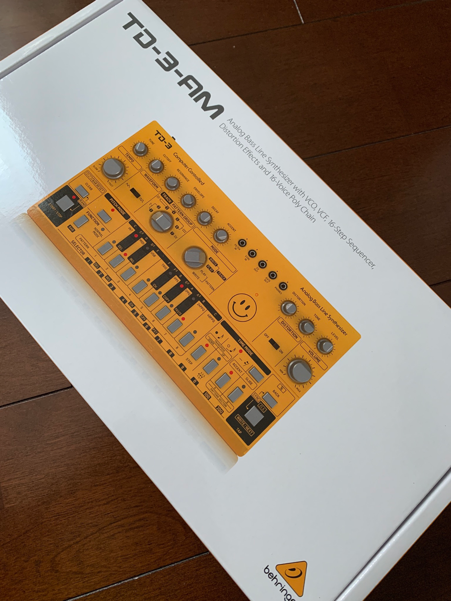

頑張らないために頑張る
ゆるく頑張ります
Behringer TD-3-AMを買いましたー
やっちまったい

これですよ、これ。スマイルマーク版TD-3。
数多あるダンスミュージックに欠かせない音色の代表の「アシッドサウンド」。その音色を奏でるうえで欠かせない機材のRolandの「TB303」。そのクローンとして、去年末あたりから話題になっていたBehringerのTD-3。
今回購入したのはそのTD-3の黄色版です。通常バージョンだとBehringerのロゴマークがある部分は、スマイルマークに変わっています。どんな使い方するか（されるか）わかってるよね、と言わざるを得ないデザインでとても好感が持てます。いい・・・。
スペック
- 同時発音数：モノフォニック
- タイプ：アナログ
- オシレーター数：1
- VCF ：1ローパス
- エンベロープ：1
- MIDI：MIDI In / Thru (各×1、5ピンDIN)
- USB：（MIDI）USB 2.0、タイプB
- ヘッドホン出力：3.5mmステレオミニジャック×1
- ライン出力：1/4インチ端子（ただし回路はアンバランス、TS端子ケーブル接続可）
- CV出力：+ 1V+ 5V（1ボルト/ oct）
- 3.5 mmTS入力：Filter in： +12 dBu、Sync in: 2.5V以上
- 3.5 mmTS出力：CV out：+1V to +5V (1 volt/oct)、Gate out：OFF: 0 V;ON: +12V
- サポートOS：Windows 7以降、macOSX 10.6.8以降
- 外部電源アダプター：9V DC670 mA（付属のアダプターを使用）
- 最大消費電力：2 W
- 寸法：（高さx幅x奥行き）56 x305 x 165 mm
- 質量：0.8 kg
- 付属品：電源アダプター
外観
まずは箱から

自分が購入したのは筐体が黄色のTD-3ですが、ちゃんと筐体の色で箱が別個に用意されているのって、地味にすごいと思います。

箱を開けるとこんな感じ。製品より先にスマイルマークのステッカーが、目に入ります。Aciiiiid!!

ステッカーや取説などをどかすと、こんな感じに本体が見えます。
筐体
筐体はプラスチック製です。TD-3は色ごとに型番が若干変わっていて、SRだと銀、AMだと黄色です。銀色だと「THE TB303クローン！」って感じでそれはそれでアリですが、この黄色もなかなかグッとくるデザインです。色が派手な黄色なせいか、プラスチッキーなチープさが1周回って「むしろこの方がいいのでは・・・」と思わせるくらいのデザインになっています。いかにも「Acid!」な感じがいいのですよ。他の筐体色でも同様ですが、文字類は黒で印字されています。これのおかげで「黄色・黒」の警戒色になっているのがまたいいですね。
コネクタ
TB303ではフロント側にコネクタは存在しませんが、TD-3にはFilter InやSync Inなどが並んでいます。
バック側には電源アダプターの接続コネクタに電源スイッチ、OUTPUTなどが並んでいます。MIDIもこちらですね。そして、USBコネクタもあります。USBコネクタはPCを接続することで、TD-3専用のエディタを用いてシーケンスの編集が可能です。
ちなみに、Phone端子もフロントに並んでいるのでイヤホンをぶっ刺して出先でいじりたい・・・と考えたくなりますが、残念ながら電池駆動ではなく外部電源アダプター（付属）が必要です。まぁ、こういうアナログなやつは割りと電池駆動じゃダメなので仕方ありません。むしろVolcaシリーズがすごいだけです。
コントローラー
各コントローラーのノブは、TB303に合わせた銀色のノブが採用されています。ボタンも同様ですが、キーボードの黒鍵部分が黒になっているのはTB303とは異なる部分です。コントローラーの配置もほぼTB303と似通っています。とはいえ、TB303にはないコントローラーがあるので、完全に一致しているわけではありませんが。
異彩を放つのは、筐体右上側に配置されたDistortionです。オフィシャルで「DS-1を参考にした」と明記されているディストーションが搭載されており、外部エフェクターを調達しなくてもTD-3が1台あればあの「ビキビキ」サウンドが再現できます。RolandのTB-03にはディレイまでついてましたが、さすがにそこまで要求するのは酷ですね。
シーケンサー
まぁアレだ、クセがすごい。
わかっていたことですが、TB303同様のインターフェイスを採用しているってことは、その「使い勝手」も同様に引き継いでいるってことです。TB303のシーケンス入力はぱっと見の難易度が高い、いろいろ面倒くさい、とにかく大変ともっぱらの評判。そのため、PCとUSB接続してGUIから入力できるようなソフトウェアまで用意されています。まぁ、このエディタがいまいちな使い勝手ともあって、有志がブラウザ上で動作するエディタを開発しています。DAWがこれだけ進化してるので、それらのシーケンサーと比べちゃうとどうしても落差が出ちゃうのは仕方のないことかもしれません。
それと、TD-3にはシーケンスをランダムに生成する機能があります。これ、どうも「本来の意味」でランダムに生成しているっぽいので、生成される結果も「それなり」だったりするのですが、5回に1回くらいの確率で面白かったり使えそうなフレーズが出てきたりします。なので、割りと侮れないという印象です。ただ、そもそもシーケンスを手入力できる303仙人（比喩）はあんまり使わない機能かもしれません。たまに気分転換に使ってみるのもいいかも。TB303のシーケンサーからして「偶然できたフレーズ」がカッコよかったりするので、そういう「偶然に期待」するという意味では本来の役目を十分果たしていると言えるかもしれません。
同期機能
同期はMIDIのほか、筐体フロントにSync In端子があります。ここにVolcaなどのSync出力を接続します。また、デフォルト設定では同期のクロックソースが「Int」になっています。
ただ、単純にぶっ刺して即同期可能！とはならないケースがあります。それは、たとえばSync端子を使ってTD-3とVolcaシリーズを同期させるケースなどです。TD-3側のクロックモード設定がVolcaシリーズのそれとは異なっており、デフォルト設定ではTD-3とVolcaが同期できません。
というわけで、VolcaシリーズのSync OutをTD-3のSync Inに指す場合は下記の設定を行っています。
- 筐体右下部分の「BACK」キーと「WRITE/NEXT」キーを同時押しする。これでSyncの設定モードになります。
- 鍵盤ボタンのFを押します。これでSyncのクロックソースを「TRIG」に変更できます。
- 次に鍵盤ボタンのAを押します。これでSyncのクロックモードを「2PPQ」に変更できます。
- 放置します。最後の操作から3秒経過すると、設定モードから通常モードに戻ります。
注意点は最初に設定モードへ遷移してから、各操作を3秒以内に行うことです。3秒以上放置すると通常モードに遷移してしまいます。
ちなみにクロックモードは、それぞれ下記のような仕様です。ここで見つけました。クロックモードの設定は、接続したい相手先とクロックの単位を合わせる必要があります。
- 1pps = 1 pulse per step (For trigger outs from a Drumcomputer; sequencer plays a step for every trigger)
- 2ppq = 2 pulses per quarter note (“Volca sync”)
- 24ppq = 24 pulses per quarter note = six pulses per sixteenth(One of the standards of DIN-sync as used by Roland. MIDI uses 24 digital clock signals per quarter note as well)
- 48ppq = 48 pulses per quarter note = 12 pulses per sixteenth (the other din sync standard (KORG?) )
上記の設定を行ったあと、VolcaとSyncさせてみると同期演奏が可能です。
ちなみに、Behringerの機材だと上記の仕様はわりと共通なようで、RD-9でも同じクロックモードが搭載されていました。デフォルト設定も同じでした。
動作
Behringer TD-3-AM鳴らしてみた。これだけで全然遊べるよ・・・ pic.twitter.com/rBBbTQcIg0
— ysko (@unknown_strings) August 11, 2020
本当になんの細工もないです。ただ適当なシーケンスを組んで、ただツマミを適当に弄っているだけです。が、それだけでもやっぱり楽しいです。アシッドサウンドすごい。
Behringer TD-3-AM、楽しすぎるぞ pic.twitter.com/Rkpr0cbL8r
— ysko (@unknown_strings) August 11, 2020
こちらはランダムに生成したシーケンスです。たまにこんないい感じのフレーズが生成されるので、なかなかに侮れないという印象。
TD-3のディストーション、いい感じ pic.twitter.com/QlSfzDCZNR
— ysko (@unknown_strings) August 11, 2020
件のDS-1をパクった参考にしたDistortionエフェクターで、フレーズをビキビキ鳴らしてみました。いや、1台でここまで遊べるTD-3ってすごいですわ。適当なリズムマシンと同期させると、フツーにあっさり1日が溶けます。YouTubeなんかでもしこたま動作ムービーなんてありますが、アシッドの音ってやっぱりいいですよね。直接本家と比較しない限り音の差異はわからないので、入手性と値段がこなれてくれば「TD-3でいいじゃん」ってなりそうです。
その他
CV出力が可能なので、シーケンサーとして利用することも可能です。え、SQ-1でいいじゃんって？アレはシーケンスの記憶ができないんですよ、TD-3はできますが。MIDIで入力してCVで出力すれば、簡易的なコンバーターとしても利用できます。まぁ、これこそSQ-1でできるじゃんって話ですけどね。
あと、TD-3ってまだ若干入手が困難なんですよね（2020年8月上旬現在）。どうも筐体色によっては入手の困難具合が異なっているっぽいですが。黄色なんて、割りと入手困難な方じゃないかな。
（2023年1月追記）最近かなり入手性は改善されて、比較的どこのネットショップでも筐体色にかかわらず在庫を見かけるようになりました。その反面、2万円強まで値上がりしてます。自分が購入した際と比較すると、筐体色にもよりますが現在は2～3割くらい値上がりしている印象です。TD-3のMod版であるTD-3-MOは4万円台なので、双方ともかなーりちょっとお高い機材になりつつあります。
まとめ
税込で1万円台、という価格破壊のおかげでまだまだ入手が難しかったりしますが、やっぱり下馬評通り興味があれば買って損はしない商品です。ソフトやハードでもTB303のクローンってたくさんリリースされてきましたが、少なくともハードに関して言えば価格と入手性、性能を鑑みるにほぼ決定版と言ってしまっていいのでは。まぁ、入手性が若干まだ悪いのは否めませんが・・・。
というわけで、ビヨビヨさせましょう。Aciiiiiiiiiiiiiiiid!!